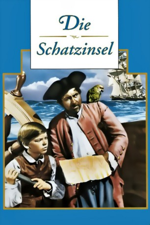

#6201 Die Schatzinsel
Alternativ: Treasure Island
 
 IMDB-Wertung: 7.0 / 10
IMDB-Wertung: 7.0 / 10  Metascore: 0
Metascore: 0 
Der junge Jim Hawkins erhält von einem sterbenden Schiffskapitän eine mysteriöse Karte, die einen Hinweis auf eine abgelegene Schatzinsel birgt. Zusammen mit dem Koch Long John Silver und dem Kapitän Smollett macht er sich auf den Weg, um den dort verborgenen Schatz zu heben. Doch während der Fahrt dorthin entpuppt sich John Silver als schmieriger Pirat, der den Schatz für sich und seine Mannen allein beanspruchen möchte. Doch er hat die Rechnung ohne die Cleverness von Jim gemacht...
Jahr: 1950
Dauer: 91 Minuten
FSK: 12
Land: England Studio: RKO Radio PicturesTonspuren:
Untertitel:
Auflösung: 720p (1280x720) Größe: 5191 MB
Genre: Abenteuer, Familie
Regisseur: Byron Haskin
Drehbuch: Sönke Andresen
Soundtrack:
Darsteller:
- Bobby Driscoll als Jim Hawkins
- Robert Newton als Long John Silver
 Finlay Currie als Capt. Billy Bones
Finlay Currie als Capt. Billy Bones Geoffrey Keen als Israel Hands
Geoffrey Keen als Israel Hands- John Laurie als Blind Pew
- John Gregson als Redruth
- Patrick Troughton als Roach
- Basil Sydney als Captain Smollett
- Walter Fitzgerald als Squire Trelawney
- Denis O'Dea als Dr. Livesy
- Ralph Truman als George Merry
- Geoffrey Wilkinson als Ben Gunn
- Francis De Wolff als Black Dog
- David Davies als Mr. Arrow
- Andrew Blackett als Gray
- William Devlin als Morgan
- Howard Douglas als Williams
 Harry Locke als Haggott
Harry Locke als Haggott- Sam Kydd als Cady
- Stephen Jack als Job
- Harold Jamieson als Scully
- David Blake Kelly als Bolen
- Reginald Drummond als Vane
- Gordon Mulholland als Durgin
- Jim O'Brady als Wolfe
- Chris Adcock als Pike
- Tom Lucas als Upson
- Leo Phillips als Spotts
- Eddie Moran als Bart
- Bob Head als Tardy
- Ken Buckle als Joyce
- Paddy Brannigan als Hunter
- Jack Arrow als Norton
- Freddy Clark als Bray
Datei: X:\1950-1959\Schatzinsel, Die (1950, FSK12, 1280x720).mkv seit 12.05.2017
Festplatte: HD 1900-1970
 Es gibt insgesamt 141 Filme in der Gruppe '1950-1959'
Es gibt insgesamt 141 Filme in der Gruppe '1950-1959'